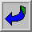

 LaTeX2e help 1.6
LaTeX2e help 1.6
LaTeX provides almost any mathematical symbol you're likely to need. The
commands for generating them can be used only in math mode. For
example, if you include $\pi$ in your source, you will get the
symbol ``pi'' in your output.